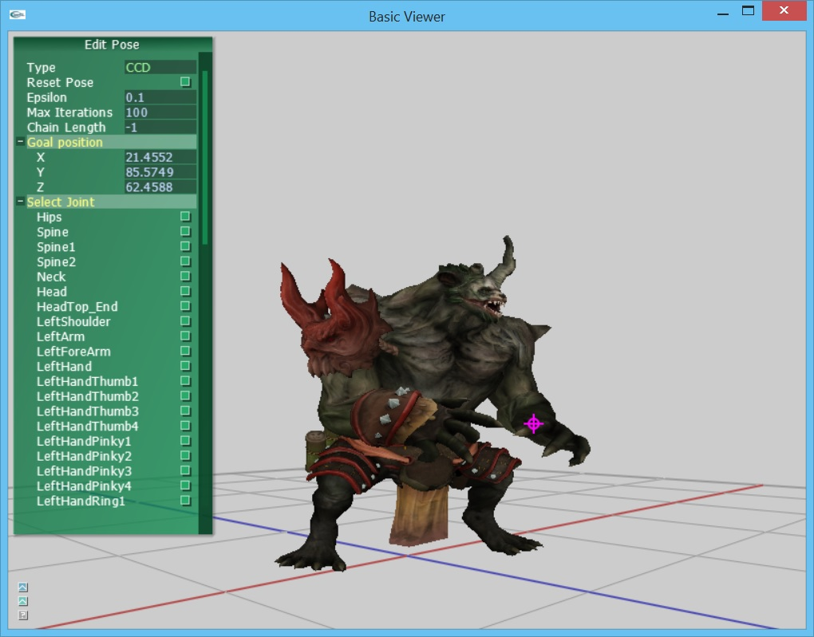

Inverse kinematics
In this assignment, you will implement inverse
kinematics. Unlike the previous assignment, where we compute the pose outward from the root, we will now compute the limb orientations based on desired positions for a limb. You implement two algorithms for doing this: a direct analytic method and cyclic coordinate descent (CCD).
User interface overview
The basecode includes a simple interface and 3D viewer which loads a model and initializes the GUI to show a list of its joints. See below for a screenshot.
The camera can be controled with the mouse:
- Left-button drag with the mouse to rotate
- Right-button drag with the mouse to pan
- Middle-button drag with the mouse to zoom
- 'f' button will focus the view on the character
The IK control panel on the bottom left can be used to set inverse kinematics setting.

Character animation implementation overview
Recall from the previous asignment that characters are represented as a hierarchy of transforms using the AnimatableHierarchy class. Now you will implement a inverse kinematics controller which modifies the hierarchy based on the desired positions of transforms.
Assignment
1. (40 points) Inverse kinematics.
- (20 points) Implement IKController::solveIKAnalytic()
- (20 points) Implement IKController::solveIKCCD()
Build and Submission Instructions!